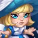

Mushy & Shroom Guide fur Hero Wars: Dominion Era
- Von: Alexandre Domingos. .
Mushy & Shroom sind einer der faszinierendsten Tanks in Hero Wars: Dominion Era, geboren aus der uralten Magie des Waldes. Als empfindungsfahige Pilzwesen, die sich durch reine Waldenergie entwickelt haben, kampfen sie nicht als einer, sondern als viele. Ihr Gameplay dreht sich darum, zusatzliche Kopien zu erschaffen, die sich dem Kampf anschlieBen, sobald sie genug Heilung erhalten. Dadurch entsteht eine einzigartige Strategie, die Teams mit starker Sustain-Ausrichtung belohnt.
Wenn du Helden mit Persoenlichkeit, Hintergrundgeschichte und cleveren Mechaniken magst, stechen Mushy & Shroom sofort hervor. Ihre Synergie mit Heilern wie Martha, Aidan und Maya erlaubt es ihnen, ihre Frontline-Praesenz zu vervielfachen, waehrend ihre Schweige-Fahigkeit gefaehrliche Magier und Helden mit Magieschaden ausschalten hilft. Sie sind zugleich charmant und stark und deshalb ein Favorit fur Spieler, die kreative und taktische Teamaufstellungen lieben.

Wer sind Mushy & Shroom in Hero Wars: Dominion Era
Mushy & Shroom sind Frontline-Tanks, die von uralter Waldmagie gestarkt werden. Sie beschworen zusatzliche Kopien, skalieren extrem gut mit Heilung-uber-Zeit-Effekten und bringen Gegner zum Schweigen, um Magie-Angreifer zu kontern.
- Hauptrolle: Tank / Beschworer
- Zusatzlich: Kontrolle (Schweigen), Sustain
- Hauptattribut: Starke
- Position: Kampft an der Frontlinie
Mushy & Shroom – Maximale Werte
| Wert | Total |
|---|---|
 Beweglichkeit
Beweglichkeit
|
3,070 |
 Intelligenz
Intelligenz
|
3,496 |
 Starke
Starke
|
17,443 |
 Gesundheit
Gesundheit
|
1,064,460 |
 Physischer Angriff
Physischer Angriff
|
31,271 |
 Magischer Angriff
Magischer Angriff
|
62,625 |
 Ruestung
Ruestung
|
53,093 |
 Magieverteidigung
Magieverteidigung
|
35,174 |
 Magiedurchdringung
Magiedurchdringung
|
30,070 |
Mushy & Shroom Vor- und Nachteile – Hero Wars: Web & Facebook
✅ Vorteile
- Ausgezeichneter Sustain dank konstanter Heilung und Regeneration durch die Shrooms.
- Hohe Feldkontrolle durch das Beschworen mehrerer Pilze, die Gegner ablenken und Schaden absorbieren.
- Sehr stark in langen Kampfen, besonders gegen Teams, die sie nicht schnell bursten konnen.
- Skaliert extrem gut mit Heilungs-Buffs, defensiven Emblemen und Support-Helden wie Martha oder Alvanor.
- Kann die gegnerische Frontlinie uberwaltigen, indem zusatzliche Einheiten erzeugt werden, die Fertigkeiten und Grundangriffe blockieren.
- GroBartige Synergie mit defensiven Erd-Teams und jeder Aufstellung, die auf Uberlebensfahigkeit fokussiert ist.
❌ Nachteile
- Sehr anfallig gegen Burst-Schaden-Teams, die Mushy loschen konnen, bevor die Heilung hochskaliert.
- Schwach gegen Helden mit hohem Flachenschaden, die beschworene Shrooms sofort vernichten konnen.
- Geringer offensiver Druck; verlasst sich stark auf Verbundete, um echten Schaden zu verursachen.
- Hat Probleme gegen Anti-Beschworungs-Mechaniken und Helden, die Vorteile aus getoteten Beschworungen ziehen.
- Kann von Rufus, Iris oder anderen Helden gekontert werden, die niedrige Verteidigungswerte und Multi-Hit-Setups ausnutzen.
- Die Leistung sinkt deutlich ohne das richtige Pet-Patronat wie Axel oder Oliver.
Mushy & Shroom Prioritat der Fahigkeiten-Upgrades - Hero Wars: Dominion Era
Mushy & Shroom verlassen sich stark auf Heilungs-Synergien und das Erzeugen von Duplikaten, wodurch ihre Fahigkeiten anders skalieren als bei traditionellen Tanks. Dieser Guide erklart jede Fahigkeit einfach und zeigt, welche am wichtigsten sind.

Perfekte Kopie
Perfekte Kopie erschafft einen inaktiven Shroom mit fehlender Gesundheit. Sobald er vollstandig geheilt ist, aktiviert er sich und wird zu einem vollwertigen Klon, der angreifen und alle erlernten Fahigkeiten einsetzen kann. Es konnen bis zu 3 aktive Shrooms existieren, was Teamdruck und Feldkontrolle stark erhoht.
Formel (Gesundheitsskalierung): 545,230 (50% Gesundheit + Level * 100)

Upgrade-Prioritat: Sehr Hoch – Dies ist die starkste Fahigkeit von Mushy & Shroom, weil sich ihr gesamtes Gameplay darum dreht, die Klone zu heilen und zu aktivieren. Mehr Level = robustere Klone = schnellere Aktivierung = mehr Prasenz auf dem Schlachtfeld.
Autonome Kopie
Aufstiegsfahigkeit: Freigeschaltet bei Aufstieg V.
Dieser neue Aufstiegseffekt halt Shrooms Kopien auch nach dem Tod von Mushy & Shroom aktiv, was ihren Wert in langen Kampfen stark verbessert und verhindert, dass der gesamte erzeugte Druck verschwindet, wenn der Hauptheld fallt.
Effekt: Shrooms Kopien bleiben nach dem Tod von Mushy & Shroom aktiv

Wildes Wachstum
Wildes Wachstum ist eine passive Fahigkeit, die inaktive Shrooms und Sporenpilze automatisch heilt. Diese Heilung wird mit jedem aktiven Klon starker, wodurch das gesamte Kit extrem schnell hochskaliert. Mehr Heilung = schnellere Klon-Aktivierung = spater mehr Schweigen und Explosionen.
Formel (Heilung pro Sekunde): 2.75% + 7,610 (8% Magischer Angriff + Level * 20)

Upgrade-Prioritat: Hoch – Diese Passive beschleunigt alles, was Mushy & Shroom tun. Mehr Heilung bedeutet schnellere Klon-Aktivierungen, mehr Explosionen und starkere Schadensskalierung im spateren Kampfverlauf.
Myzelverbindung
Aufstiegsfahigkeit: Freigeschaltet bei Aufstieg II.
Wenn ein Sporenpilz oder eine Shroom-Kopie ihre Gesundheit zum ersten Mal vollstandig wiederherstellt, werden Mushy & Shroom geheilt. Das fugt zusatzlichen Sustain oberhalb des normalen Heilungs-Mechanismus des Helden hinzu.
Formel (Heilung):
Von Shroom: 130,250 (200% Magischer Angriff + 5,000)
Von Sporenpilz: 13,025 (20% Magischer Angriff + 500)

Verzweigtes Myzel
Verzweigtes Myzel beschwort 3 Sporenpilze, die aktiv werden, nachdem sie vollstandig geheilt wurden. Sobald sie aktiviert sind, laufen sie auf den Gegner zu und explodieren, verursachen magischen Schaden und wenden fur 4 Sekunden Schweigen an.
Formel (Explosionsschaden): 52,938 (70% Magischer Angriff + Level * 70)
Formel (Startgesundheit des Sporenpilzes): 170,314 (16% Gesundheit)
Abklingzeit: 11s

Upgrade-Prioritat: Mittel-Hoch – Das Schweigen und der magische Flachenschaden sind extrem stark, aber der Wert hangt davon ab, wie schnell die Sporen geheilt werden. Trotzdem sehr wichtig fur Kontrolle und Burst.

Irrlicht
Irrlicht verursacht magischen Schaden am nachsten Gegner. Der Schaden steigt mit der Heilung, die seit der letzten Aktivierung erhalten wurde: 50% von Mushys Heilung und 150% von Heilung durch Verbundete werden in zusatzlichen Schaden umgewandelt.
Formel (Grundschaden): 63,100 (80% Magischer Angriff + Level * 100)
Formel (Maximaler Zusatzschaden): 208,235 (12% Gesundheit + Level * 600 + 2,500)
Abklingzeit: 18s

Upgrade-Prioritat: Mittel – Der skalierende Schaden ist stark, aber inkonsistent, weil er von externer Heilung abhangt. Gute Fahigkeit, aber nicht so essenziell wie Klone, Passive und Schweigen.
Beste Skins fur Mushy & Shroom – Hero Wars: Dominion Era
Mushy & Shroom profitieren am meisten von Skins, die Magischen Angriff, Gesundheit, Ruestung und Magieverteidigung erhohen, da sie sowohl ihre Haltbarkeit als auch die Effizienz ihrer Shroom-Kopien verbessern.

Standardskin (Starke)
Wertegewinn: Starke +1,365
- - Gesundheit durch Starke: +54,500
- - Physischer Angriff durch Starke: +1,365
Upgrade-Prioritat: Mittel – Bietet zusatzliche Gesundheit in solider Menge, ist aber schwacher als die reine Gesundheitsskin und weniger effektiv als Magischer Angriff fur die Skalierung der Fahigkeiten.
Gesamtzahl an Starke-Skinsteinen fur das Maximallevel:
 30,825
30,825

Mondskin (Gesundheit)
Wertegewinn: Gesundheit +106,645
Upgrade-Prioritat: Hoch – Erhoht die Uberlebensfahigkeit direkt und verbessert mehrere Fahigkeitseffekte, die mit Gesundheit skalieren, besonders die Haltbarkeit von Perfekte Kopie und den Maximalschaden von Irrlicht.
Gesamtzahl an Starke-Skinsteinen fur das Maximallevel:
55,410

Fruhlingsskin (Magiedurchdringung)
Wertegewinn: Magiedurchdringung +10,650
Upgrade-Prioritat: Niedrig – Erhoht den Schaden, bietet aber keinen defensiven Nutzen. Als Tank priorisieren Mushy & Shroom Uberleben statt zusatzlicher Durchdringung.
Gesamtzahl an Starke-Skinsteinen fur das Maximallevel:
55,410

Damonenskin (Magischer Angriff)
Wertegewinn: Magischer Angriff +10,650
Upgrade-Prioritat: Sehr Hoch – Die starkste Skin, weil Magischer Angriff den Schaden von Verzweigtes Myzel und Irrlicht direkt erhoht und die Heilungsskalierung aller Shroom-basierten Effekte verbessert.
Gesamtzahl an Starke-Skinsteinen fur das Maximallevel:
55,410

Kybernetische Skin (Ruestung)
Wertegewinn: Ruestung +10,650
Upgrade-Prioritat: Mittel-Hoch – Exzellent gegen physischen Schaden. Ermoglicht es Mushy & Shroom langer zu tanken, gibt den Shrooms mehr Zeit zur Aktivierung und erhoht den Sustain des Teams.
Gesamtzahl an Starke-Skinsteinen fur das Maximallevel:
55,410

Engelsskin (Magieverteidigung)
Wertegewinn: Magieverteidigung +10,650
Upgrade-Prioritat: Mittel-Hoch – Starke defensive Option gegen Teams mit magischem Schaden. Hilft Mushy & Shroom langer gegen Magier zu uberleben, gibt den Shrooms mehr Zeit zur Aktivierung und halt die Frontlinie stabil.
Gesamtzahl an Starke-Skinsteinen fur das Maximallevel:
55,410
Mushy & Shroom Glyphen-Upgrade-Prioritat
Dieser Guide erklart die optimale Reihenfolge zum Verbessern der Glyphen fur Mushy & Shroom in Hero Wars: Dominion Era und zeigt, welche Werte den groBten Kampfeinfluss haben und warum ihr Tank-Magier-Hybrid-Kit starker von defensiver Skalierung profitiert.
1. Glyphe – Magischer Angriff:
Wertegewinn: Magischer Angriff +6,500
Upgrade-Prioritat: Hoch – Erhoht alle magiebasierten Fahigkeiten stark, besonders Heilung und Schaden-uber-Zeit-Effekte, und verbessert dadurch sowohl den offensiven Druck als auch den Gesamtnutzen.
2. Glyphe – Ruestung:
Wertegewinn: Ruestung +6,500
Upgrade-Prioritat: Sehr Hoch – Als Frontline-Tanks verlassen sich Mushy & Shroom stark auf Ruestung, um physischen Burst-Schaden zu reduzieren und lange genug zu uberleben, damit sich ihre Pilze vervielfaltigen und heilen konnen.
3. Glyphe – Gesundheit:
Wertegewinn: Gesundheit +62,200
Upgrade-Prioritat: Sehr Hoch – Ihr gesamtes Kit skaliert mit Gesundheit: Uberlebensfahigkeit, Spawnfrequenz der Pilze und die Fahigkeit, am Leben zu bleiben, wahrend Stapel aufgebaut werden. Eine zentrale Tank-Glyphe.
4. Glyphe – Magiedurchdringung:
Wertegewinn: Magiedurchdringung +6,500
Upgrade-Prioritat: Mittel – Nutlich, um magischen Schaden gegen Teams mit hoher Resistenz zu verbessern, aber fur die Frontline-Rolle von Mushy & Shroom deutlich weniger wirkungsvoll als Ruestung und Gesundheit.
5. Glyphe – Starke:
Wertegewinn: Starke +1,135
- - Gesundheit durch Starke: +45,400
- - Physischer Angriff durch Starke: +1,135
Upgrade-Prioritat: Niedrig – Der Bonus auf Gesundheit ist hilfreich, aber deutlich schwacher als die dedizierte Gesundheits-Glyphe. Der physische Angriff ist fur sie irrelevant und macht dies zur am wenigsten nutzlichen Verbesserung.
Mushy & Shroom Artefakt-Upgrade-Prioritat - Hero Wars: Dominion Era
Dieser Guide erklart die optimale Artefakt-Upgrade-Reihenfolge fur Mushy & Shroom in Hero Wars: Dominion Era und zeigt, welche Artefakte den starksten Einfluss im Kampf haben und ihre Tank-Magier-Hybridrolle am besten verstarken.

Ichor of Perfection (Waffenartefakt):
Wertegewinn: Ruestung +50,190
Upgrade-Prioritat: Sehr Hoch – Dieses Artefakt aktiviert sich zusammen mit ihrer Ult und verleiht einen kraftigen **Ruestungs-Buff fur das ganze Team fur 9 Sekunden**. Da Mushy & Shroom Frontline-Tanks sind, hat die Erhohung der physischen Verteidigung des gesamten Teams bei jeder Ult enormen Einfluss auf Uberlebensfahigkeit und Teamstabilitat.

Defender's Covenant (Buchartefakt):
Wertegewinn:
Ruestung +12,546
Magieverteidigung +12,546
Upgrade-Prioritat: Hoch – Gewahrt konstante passive Verteidigungswerte, sowohl Ruestung als auch Magieverteidigung. Das erhoht die Haltbarkeit von Mushy & Shroom in langen Kampfen erheblich und erlaubt ihnen, wahrend des Beschworens und Heilens mit Pilzen weiter Schaden auszuhalten. Extrem wertvoll fur konstantes Tanking.

Ringartefakt (Starke):
Wertegewinn: Starke +6,249
- - Gesundheit durch Starke: +249,960
- - Physischer Angriff durch Starke: +6,249
Upgrade-Prioritat: Mittel – Die zusatzliche Gesundheit ist fur einen Tank hilfreich, skaliert aber schlechter als reine Gesundheits-Glyphen und -Artefakte. Der physische Angriff ist fur Mushy & Shroom irrelevant. Nutzlich, aber mit dem geringsten direkten Einfluss auf ihr Tanking und ihre magiebasierten Fahigkeiten.
Bestes Patronat fur Mushy & Shroom
Dieser Guide listet die besten Pets fur Mushy & Shroom in Hero Wars: Dominion Era auf, geordnet von am nutzlichsten bis am wenigsten nutzlich, basierend auf Kampfvorteilen und Patronats-Synergien fur Tanking und Uberleben.
1. Platz:

Axel ist das beste Pet fur Mushy & Shroom, weil seine Patronats-Fahigkeit die Uberlebensfahigkeit stark erhoht, indem sie schweren Schaden umleitet und begrenzt, wie viel Schaden der Held durch einen einzelnen Angriff erleiden kann. Mushy & Shroom mussen am Leben bleiben, um Pilze zu beschworen und Heilung aufrechtzuerhalten, daher verhindert Axel Burst-Tode durch Helden wie Dante, Ishmael und K'arkh. Der Bonus auf Magischen Angriff verbessert zudem ihren Schaden, wahrend Ruestung das Tanking verstarkt.
2. Platz:

Oliver ist eine starke Sekundaroption, die voll auf Tank-Sustain ausgerichtet ist. Seine passive Heilung unter 50% Lebenspunkten hilft Mushy & Shroom, sich in langen Kampfen zu erholen, und seine Patronats-Boni auf Gesundheit und Ruestung starken ihre Haltbarkeit zusatzlich. Da Oliver jedoch keinen Teamschutz und keine Burst-Schaden-Minderung bietet, liegt er fur das Uberleben an der Front leicht hinter Axel.
Wie man Mushy & Shroom kontert - Hero Wars: Dominion Era

Arachne kontert Mushy & Shroom, indem sie sowohl den Helden als auch ihre Pilze betaubt, Heilungsimpulse verhindert und ihren defensiven Aufbau unterbricht. Ihr Burst mit reinem Schaden umgeht die Skalierung ihrer Magieverteidigung.

Iris ist einer der hartesten Konter, weil Expose Soul den riesigen Gesundheitspool von Mushy & Shroom in reinen Schaden umwandelt. Ihre Pilze losen auBerdem zusatzlichen Bissschaden aus und beschleunigen ihren Tod.

Rufus ist ein weicher Konter, weil Mushy & Shroom viel magischen und reinen Schaden verursachen. Wenn ihr TodesstoB magisch ist, belebt sich Rufus mit wiederhergestellter Gesundheit wieder, wodurch ihr Finisher komplett neutralisiert wird. Das verschafft seinem Team Zeit, die Pilze zu uberwaltigen.
Beste Kriegsflaggen fur Mushy & Shroom
Mushy & Shroom profitieren stark von Kriegsflaggen, die Heilung, Uberlebensfahigkeit und den Energiefluss des Tanks verbessern und so ihren Frontline-Sustain und den Nutzen fur das Team steigern.

Kriegsflagge der Erholung:
Diese Kriegsflagge erhoht jegliche Heilung um 10%, steigert damit direkt Shrooms Heilungsoutput und verbessert Mushys Uberlebensfahigkeit in langen Kampfen.
Vorteil fur Mushy & Shroom und das Team: Starkere Heilung halt die Frontlinie stabil und erlaubt es ihrer Pilz-Verdopplung, langer zu funktionieren, bevor sie zusammenbricht.

Kriegsflagge der Vorhut:
Heilt den Fronthelden alle 4 Sekunden basierend auf seiner maximalen Gesundheit. Mushys naturlich hohe Haltbarkeit harmoniert perfekt mit dieser auf HP basierenden passiven Heilung.
Vorteil fur Mushy & Shroom und das Team: Zusatzlicher Sustain stellt sicher, dass Mushy Burst-Phasen uberlebt, wahrend Shrooms weiter Heilung und Druck liefern.

Kriegsflagge des Eifers:
Erhoht die Energiegewinnung des Tanks um 10%, sodass Mushy Fahigkeiten haufiger aktivieren kann, besonders defensive und heilungsbezogene Fahigkeiten.
Vorteil fur Mushy & Shroom und das Team: Schnellere Aktivierungen steigern Schutz, Kontrolle und die gesamte Kampfdauer des Teams.
Beste Teams fur Mushy & Shroom - Hero Wars: Dominion Era
| Mushy & Shroom Bestes Team 1 | ||||||
|---|---|---|---|---|---|---|
| #1 |
|
|
|
|
|
|
|
|
|
|
|
|
|
|
Entdecke neue Fahigkeiten mit unseren ausgewahlten Guides
 Augustus Guide - Der ⚡Botschafter des Blitzes in Hero Wars: Dominion Era
Augustus Guide - Der ⚡Botschafter des Blitzes in Hero Wars: Dominion Era
 Electra Guide – Wenn Schmerz zu Macht wird in Hero Wars Dominion Era
Electra Guide – Wenn Schmerz zu Macht wird in Hero Wars Dominion Era
") Erkunde den Event-Kalender von Hero Wars: Dominion Era und sei vorbereitet auf...
Erkunde den Event-Kalender von Hero Wars: Dominion Era und sei vorbereitet auf...
Hinterlasse deine Meinung
Hat dir unser Mushy & Shroom Guide fur Hero Wars (Web und Facebook) gefallen? Gibt es etwas, das du nicht verstanden hast oder bei dem du Anderungen vorschlagen mochtest? Wir laden dich ein, an unserem Kommentarbereich auf der Alexandre Games Blog-Seite teilzunehmen. Teile gerne deine Meinung, klaere deine Fragen und schicke uns deine Vorschlage.
Klicke auf den Button unten, um zu beginnen: